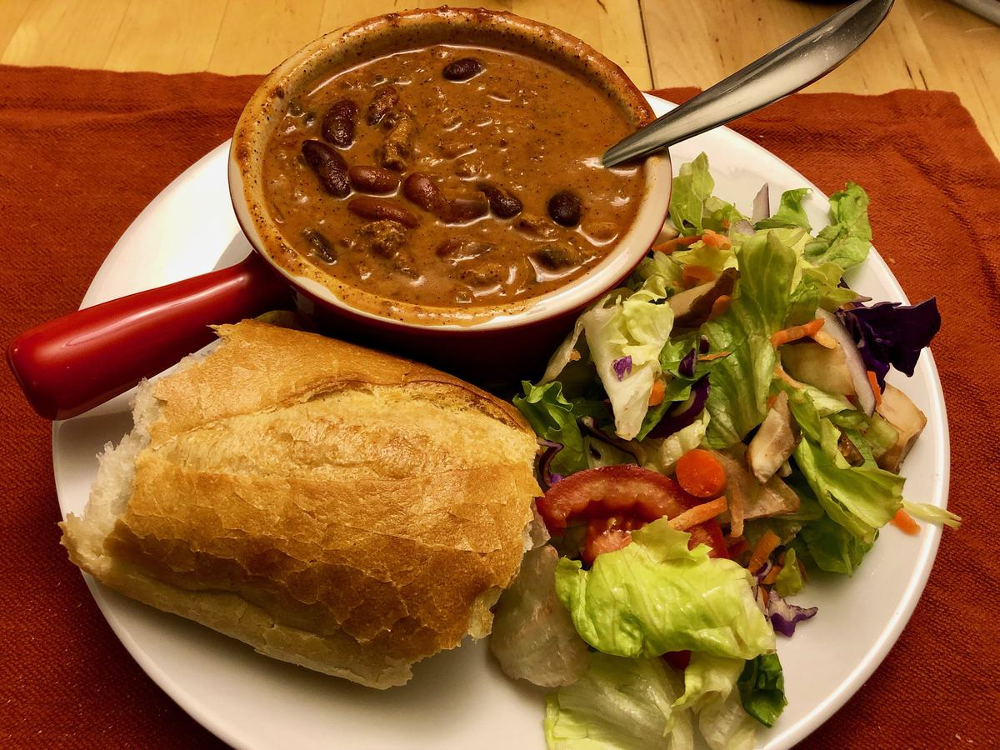

Based on Chrissy Teigen Cravings, pg. 148
Personal rating: 2 / 5

1 lb ground turkey
1 medium onion, chopped
1 cup mushrooms, chopped
2 Tbsp (Lawry's) seasoning salt (see substitute below)
3 Tbsp chili powder
1 tsp cayenne pepper
3 cloves garlic, minced
2 cups water
2 (15 oz) cans tomato sauce
2 (15 oz) cans kidney beans, drained
2 Tbsp light brown sugar
1 tsp garlic powder
1 tsp onion powder
1 tsp paprika
1 tsp ground turmeric
1 tsp salt
1 tsp white sugar
(Optional) Plain Yogurt
(Optional) Shredded cheese
(Optional) Crushed tortilla chips
Heat a large pot over medium heat. Add the ground turkey, onion, mushrooms, seasoning salt (or substitute), chili powder, and cayenne
Cook for 8 min. Add the garlic and cook for 1 additional min
Add 2 cups water, the tomato sauce, kidney beans, brown sugar, and bring to a boil
Reduce heat to medium-low and simmer for 35-45 min to thicken slightly and flavor-mingle